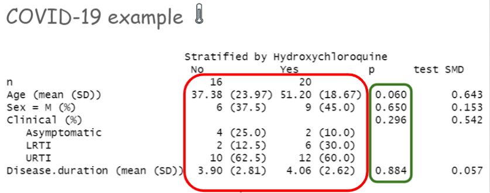

Chapter 6 Step 3: Balance and overlap
Balance is more important than prediction!
- Criteria to assess success of step 2: PS estimation
- better balance
- better overlap [no extrapolation!]
- PS = 0 or PS = 1 needs close inspection
6.1 Assessment of Balance by SMD
- balance = similarity of the covariate distributions
Full data:
tab1e <- CreateTableOne(vars = baselinevars,
data = analytic,
strata = "diabetes",
includeNA = TRUE,
test = TRUE, smd = TRUE)
print(tab1e, showAllLevels = FALSE, smd = TRUE, test = TRUE)## Stratified by diabetes
## 0 1 p test SMD
## n 1232 330
## gender = Male (%) 738 (59.9) 221 (67.0) 0.023 0.147
## age (mean (SD)) 50.54 (17.23) 63.04 (12.87) <0.001 0.822
## race (%) 0.110 0.151
## Black 253 (20.5) 71 (21.5)
## Hispanic 220 (17.9) 64 (19.4)
## Other 169 (13.7) 59 (17.9)
## White 590 (47.9) 136 (41.2)
## education (%) 0.005 0.186
## College 649 (52.7) 157 (47.6)
## High.School 518 (42.0) 140 (42.4)
## School 65 ( 5.3) 33 (10.0)
## married (%) <0.001 0.282
## Married 727 (59.0) 194 (58.8)
## Never.married 201 (16.3) 27 ( 8.2)
## Previously.married 304 (24.7) 109 (33.0)
## bmi (mean (SD)) 29.14 (7.03) 33.01 (7.65) <0.001 0.526Matched data:
matched.data <- match.data(match.obj)
tab1m <- CreateTableOne(vars = baselinevars,
strata = "diabetes",
data = matched.data,
includeNA = TRUE,
test = TRUE, smd = TRUE)Compare the similarity of baseline characteristics between treated and untreated subjects in a the propensity score-matched sample.
- In this case, we will compare SMD < 0.1 or not.
- In some literature, other generous values (0.25) are proposed. (Austin 2011b)
print(tab1m, showAllLevels = FALSE, smd = TRUE, test = FALSE) ## Stratified by diabetes
## 0 1 SMD
## n 316 316
## gender = Male (%) 218 (69.0) 212 (67.1) 0.041
## age (mean (SD)) 63.03 (13.48) 62.67 (12.87) 0.027
## race (%) 0.105
## Black 79 (25.0) 68 (21.5)
## Hispanic 58 (18.4) 61 (19.3)
## Other 44 (13.9) 53 (16.8)
## White 135 (42.7) 134 (42.4)
## education (%) 0.007
## College 153 (48.4) 152 (48.1)
## High.School 133 (42.1) 134 (42.4)
## School 30 ( 9.5) 30 ( 9.5)
## married (%) 0.099
## Married 183 (57.9) 186 (58.9)
## Never.married 20 ( 6.3) 27 ( 8.5)
## Previously.married 113 (35.8) 103 (32.6)
## bmi (mean (SD)) 32.38 (7.62) 32.63 (7.20) 0.0356.2 SMD vs. P-values
Possible to get p-values to check balance: but strongly discouraged
- P-value based balance assessment can be influenced by sample size
print(tab1m, showAllLevels = FALSE, smd = FALSE, test = TRUE) ## Stratified by diabetes
## 0 1 p test
## n 316 316
## gender = Male (%) 218 (69.0) 212 (67.1) 0.670
## age (mean (SD)) 63.03 (13.48) 62.67 (12.87) 0.733
## race (%) 0.629
## Black 79 (25.0) 68 (21.5)
## Hispanic 58 (18.4) 61 (19.3)
## Other 44 (13.9) 53 (16.8)
## White 135 (42.7) 134 (42.4)
## education (%) 0.996
## College 153 (48.4) 152 (48.1)
## High.School 133 (42.1) 134 (42.4)
## School 30 ( 9.5) 30 ( 9.5)
## married (%) 0.465
## Married 183 (57.9) 186 (58.9)
## Never.married 20 ( 6.3) 27 ( 8.5)
## Previously.married 113 (35.8) 103 (32.6)
## bmi (mean (SD)) 32.38 (7.62) 32.63 (7.20) 0.662Assessment of balance in the matched data
smd.res <- ExtractSmd(tab1m)
t(round(smd.res,2))## gender age race education married bmi
## 1 vs 2 0.04 0.03 0.11 0.01 0.1 0.03COVID example from Gautret et al. (2020)
p-value vs. SMD

- Statistical tests are affected by sample size
- t-test
- McNemar tests
- Wilcoxon rank test
- Balance of what?
- statistical tests make inference about balance at the population level
- but we are really interested in balance at the sample level
6.3 Vizualization for Overlap
boxplot(PS ~ diabetes, data = analytic,
lwd = 2, ylab = 'PS')
stripchart(PS ~ diabetes, vertical = TRUE,
data = analytic, method = "jitter",
add = TRUE, pch = 20, col = 'blue')plot(match.obj, type = "jitter")## [1] "To identify the units, use first mouse button; to stop, use second."## integer(0)Vizualization for assessing overlap issues
plot(match.obj, type = "hist")6.4 Variance ratio
- Variance ratios \(\sim\) 1 means:
- equal variances in groups
- group balance
- could vary from 1/2 to 2
- other cut-points are suggested as well (0.8 to 1.2)
See Stuart (2010) and Austin (2009)
require(cobalt)
baltab.res <- bal.tab(x = match.obj, data = analytic,
treat = analytic$diabetes,
disp.v.ratio = TRUE)
baltab.res## Call
## matchit(formula = ps.formula, data = analytic, method = "nearest",
## distance = "logit", replace = FALSE, caliper = 0.2 * sd(logitPS),
## ratio = 1)
##
## Balance Measures
## Type Diff.Adj V.Ratio.Adj
## distance Distance 0.0276 1.0992
## gender_Male Binary -0.0190 .
## age Contin. -0.0278 0.9114
## race_Black Binary -0.0348 .
## race_Hispanic Binary 0.0095 .
## race_Other Binary 0.0285 .
## race_White Binary -0.0032 .
## education_College Binary -0.0032 .
## education_High.School Binary 0.0032 .
## education_School Binary 0.0000 .
## married_Married Binary 0.0095 .
## married_Never.married Binary 0.0222 .
## married_Previously.married Binary -0.0316 .
## bmi Contin. 0.0338 0.8928
##
## Sample sizes
## Control Treated
## All 1232 330
## Matched 316 316
## Unmatched 916 146.5 Close inspection of boundaries
boxplot(PS ~ diabetes, data = matched.data,
lwd = 2, ylab = 'PS', ylim=c(0,1))
stripchart(PS ~ diabetes, vertical = TRUE,
data = matched.data, method = "jitter",
add = TRUE, pch = 20, col = 'blue')
abline(h=c(0+0.05,1-0.05), col = "red", lty = 2)- Sensitivity analysis should be done with trimming.
- Have consequences in interpretation
- target population may be unclear
References
———. 2009. “Balance Diagnostics for Comparing the Distribution of Baseline Covariates Between Treatment Groups in Propensity-Score Matched Samples.” Statistics in Medicine 28 (25): 3083–3107.
———. 2011b. “An Introduction to Propensity Score Methods for Reducing the Effects of Confounding in Observational Studies.” Multivariate Behavioral Research 46 (3): 399–424.
Gautret, Philippe, Jean-Christophe Lagier, Philippe Parola, Line Meddeb, Morgane Mailhe, Barbara Doudier, Johan Courjon, et al. 2020. “Hydroxychloroquine and Azithromycin as a Treatment of COVID-19: Results of an Open-Label Non-Randomized Clinical Trial.” International Journal of Antimicrobial Agents 56 (1): 105949.
Stuart, Elizabeth A. 2010. “Matching Methods for Causal Inference: A Review and a Look Forward.” Statistical Science: A Review Journal of the Institute of Mathematical Statistics 25 (1): 1.